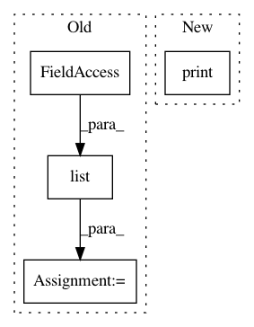

d53c44f964e0541008c5e1d5a51fd134e8eb11b7,lib/streamlit/Proxy.py,Proxy,save_cloud,#Proxy#Any#,267
Before Change
return id[:length]
def save_cloud(self, _data):
keys = list(self._connections)
master = self._connections[keys[0]]._master_queue
self._cloud.local_save(master.get_serialized_deltas())
// return
// client = storage.Client()
After Change
return id[:length]
async def save_cloud(self, _data):
print("save_cloud")
// keys = list(self._connections)
// master = self._connections[keys[0]]._master_queue
//
In pattern: SUPERPATTERN
Frequency: 4
Non-data size: 4
Instances
Project Name: streamlit/streamlit
Commit Name: d53c44f964e0541008c5e1d5a51fd134e8eb11b7
Time: 2018-05-21
Author: adrien.g.treuille@gmail.com
File Name: lib/streamlit/Proxy.py
Class Name: Proxy
Method Name: save_cloud
Project Name: maciejkula/spotlight
Commit Name: 1201490527705830a9887cc5d8f4d0556304dcc8
Time: 2017-07-15
Author: maciej.kula@gmail.com
File Name: examples/movielens_sequence/helpers.py
Class Name:
Method Name: _print_df
Project Name: streamlit/streamlit
Commit Name: 9b0a4d453c7fe820e17f7ad1c625a957e6c0ae70
Time: 2018-05-19
Author: adrien.g.treuille@gmail.com
File Name: lib/streamlit/Proxy.py
Class Name: Proxy
Method Name: save_cloud
Project Name: NifTK/NiftyNet
Commit Name: baecce5a6fbe4576ca8348a93dc56f07e7ba84f6
Time: 2019-06-05
Author: ucabtmv@ucl.ac.uk
File Name: niftynet/contrib/csv_reader/csv_reader.py
Class Name: CSVReader
Method Name: _parse_csv